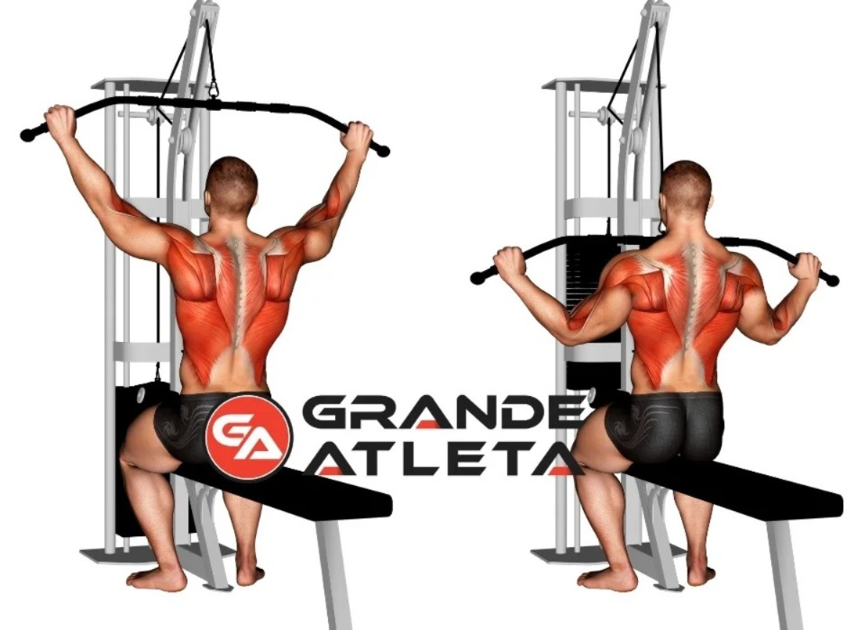
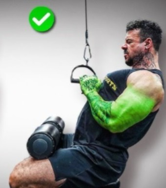
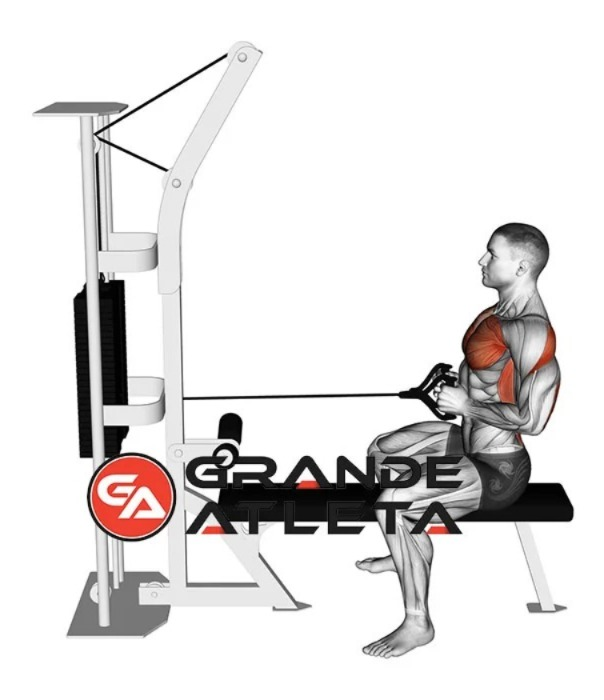
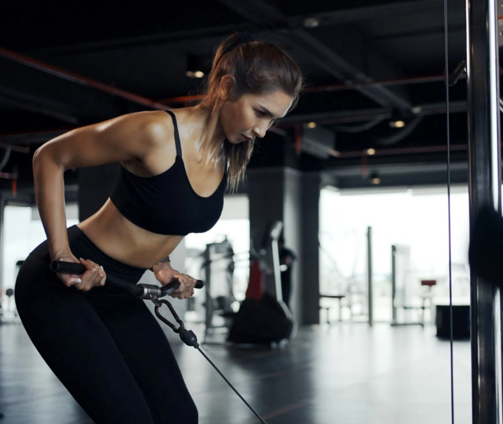
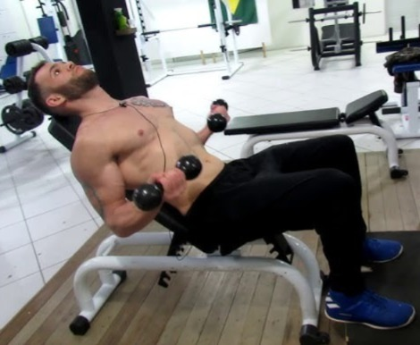
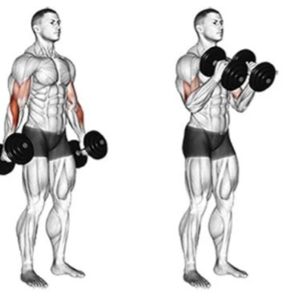

| Exercício | Séries | Repetições | Visualização |
|---|---|---|---|
| Aquecimento — Remada australiana (corda) | 2 | 10 |  |
| Puxada aberta pulley | 3 | 10 |  |
| Puxada triângulo | 3 | 10 |  |
| Remada baixa | 3 | 10 |  |
| Remada curvada na polia | 3 | 10 |  |
| Rosca no banco 45º | 3 | 10 |  |
| Rosca martelo | 3 | 10 |  |
| Esteira ou bike | |||
| *Descanso de 1min - 1min20s entre as séries | |||